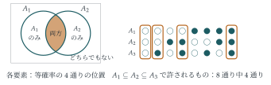

STEP III 2019、第12問
先に進む前に問題を読んでおこう。問題は、OCRが配布している2019年のSTEP問題一式（zipファイル）のSTEP IIIに収録されている： www.ocr.org.uk/Images/696590-2019-past-papers.zip
導入
\(\{1, 2, \ldots, 100\}\) の部分集合（subset）を二つ、まったくランダムに選ぶ。それらが共通の要素を一つももたない確率はどのくらいだろうか。直観は「かなり高い。たいていの集合の組は異なるのだから」と言うかもしれない。実際には、その確率は \(\bigl(\frac34\bigr)^{100}\)、およそ \(3 \times 10^{-13}\) である。ランダムな集合は大きく（全体のおよそ半分を含み）、そのためほとんど必ず重なり合うのである。
この問題は短いが、その核にある一つの考え方は強力である。集合を全体として考えるのではなく、要素を一つずつ考えるのである。ランダムな部分集合とは、各要素に一回ずつ、合計 \(n\) 回の独立（independent）な硬貨投げにすぎず、ランダムな部分集合に関するあらゆる問いは、それらの硬貨投げに関する問いに帰着する。
取りかかる前に
\(\{1, \ldots, n\}\) の部分集合を、「はい／いいえ」で答える \(n\) 個の問いへの答えの列で表すにはどうすればよいか。
各要素 \(i\) について、「\(i\) はその集合に含まれるか」という問いに答える。部分集合が決まれば答えが決まり、答えが決まれば部分集合が決まる。各要素について選択肢は \(2\) 通りなので、部分集合は全部で \(2^n\) 個ある。部分集合を一様ランダムに選ぶことは、各問いに公平な硬貨を独立に投げて答えることと同じである。
順を追って解く
段階 1 一つの要素
硬貨投げによる記述から、\(\mathrm{P}(1 \in A_1) = \frac12\) である。実際、\(2^n\) 個の部分集合のうちちょうど半分が \(1\) を含む。\(1\) を含まない各部分集合に、それに \(1\) を加えて得られる部分集合を対応させればよい。
段階 2 互いに素な集合
\(A_1 \cap A_2 = \varnothing\) となるためには、各要素 \(i\) について何が成り立たなければならないか。一つの要素について、その確率はいくらか。なぜ要素ごとの確率を掛け合わせてよいのか。
\(A_1\) と \(A_2\) が互いに素（disjoint）であるのは、両方に属する要素が一つもないときであり、またそのときに限る。一つの要素 \(i\) については、等確率の四つの可能性がある。どちらの集合にも属さない、\(A_1\) のみに属する、\(A_2\) のみに属する、両方に属する、の四つである（図 9.12.1 左）。禁じられるのは最後のものだけなので、\(i\) が両方には属さない確率は \(\frac34\) である。異なる要素は異なる独立な硬貨投げによって決まるので、 \[\mathrm{P}(A_1 \cap A_2 = \varnothing) = \Bigl(\frac34\Bigr)^n. \qed\] 三つの集合の場合、要素 \(i\) が三つすべてに属する確率は \(\frac18\) なので、\(\mathrm{P}(A_1 \cap A_2 \cap A_3 = \varnothing) = \bigl(\frac78\bigr)^n\) である。一般に、 \[\mathrm{P}(A_1 \cap \cdots \cap A_m = \varnothing) = \Bigl(1 - \frac{1}{2^m}\Bigr)^n. \qed\]
段階 3 包含関係
\(A_1 \subseteq A_2\) となるためには、一つの要素についての四つの可能性のうちどれが禁じられるか。
\(A_1 \subseteq A_2\) が成り立たないのは、\(A_1\) には属するが \(A_2\) には属さない要素が存在するときであり、またそのときに限る。ここでも四つのうち一つのパターンが禁じられるので、 \[\mathrm{P}(A_1 \subseteq A_2) = \Bigl(\frac34\Bigr)^n,\] となり、互いに素である確率と同じになる。これは偶然ではない。\(A_1 \subseteq A_2\) となるのは \(A_1\) と \(A_2\) の補集合（complement）が互いに素であるときであり、またそのときに限る。そして、ランダムな集合の補集合もまたランダムな集合なのである。
\(A_1 \subseteq A_2 \subseteq A_3\) となるためには、一つの要素について、所属の仕方（各集合に属するか属さないか）の \(8\) 通りのパターンのうちどれが許されるか。
鎖（chain）\(A_1, A_2, A_3\) を順にたどると、要素はいったん属したら、その後も属し続けなければならない。したがって許されるパターンは「属さない、属さない、属さない」「属さない、属さない、属する」「属さない、属する、属する」「属する、属する、属する」の \(8\) 通り中 \(4\) 通りである（図 9.12.1 右）。よって \(\mathrm{P}(A_1 \subseteq A_2 \subseteq A_3) = \bigl(\frac48\bigr)^n = \bigl(\frac12\bigr)^n\) である。
\(m\) 個の集合からなる鎖については、許されるパターンは、その要素が最初に属する集合（\(A_1, \ldots, A_m\) のいずれか、あるいはどれにも属さない）によって決まるので、\(2^m\) 通りのパターンのうち \(m + 1\) 通りが許される。 \[\mathrm{P}(A_1 \subseteq A_2 \subseteq \cdots \subseteq A_m) = \Bigl(\frac{m + 1}{2^m}\Bigr)^n. \qed\]

振り返り
要素ごとに分解する。集合全体についての各条件（互いに素、包含、鎖）は、それぞれの要素についての個別の条件であった。
要素間の独立性。各要素は独立な硬貨投げによって決まるので、確率は掛け合わされる。
パターンを数える。どの答えも（許されるパターンの数 \(\div\) すべてのパターンの数）\(^n\) であった。
背後にある数学
確率を使わずに数える
選び方の総数を掛けると、各確率は個数に変わる。\(A_1 \subseteq A_2\) を満たす順序対 \((A_1, A_2)\) の個数は \(4^n \times \bigl(\frac34\bigr)^n = 3^n\) である。これらの組は直接数えることもできる。\(A_2\) の大きさ \(k\) を選び、次に \(A_2\) そのものを \(\binom nk\) 通りの方法で選び、さらに \(A_1\) をその \(2^k\) 個の部分集合のいずれかとして選ぶ。したがって \[\sum_{k=0}^{n}\binom{n}{k}2^k = 3^n,\] となり、これは \((1 + 2)^n\) に対する二項定理（binomial theorem）である。同じものを二通りの方法で、一度は要素ごとに、一度は大きさごとに数えることで、恒等式が証明される。これが二重数え上げ（double counting）の方法であり、第 7.9 節 で正多面体とともに出会ったものである。同様に、鎖 \(A_1 \subseteq \cdots \subseteq A_m\) の個数は \((m + 1)^n\) である。
部分集合の束
\(\{1, \ldots, n\}\) の部分集合全体は、包含関係によって順序づけると、ブール束（Boolean lattice）と呼ばれる構造をなす。これは \(n\) 次元の立方体として図示できる。各部分集合は頂点であり、その「はい／いいえ」の答えの列によってラベルづけされ、辺に沿って移動することは要素を一つ加えるか取り除くことに対応する。鎖は上向きに進む経路である。部分集合の族に条件を課したとき、その族がどこまで大きくなりうるかを記述する深い結果がある。シュペルナー（Sperner）の定理（1928年）は、どの集合も他の集合を含まないような族のうち最大のものは \(\binom{n}{\lfloor n/2\rfloor}\) 個の集合からなることを主張する。エルデシュ–コー–ラドー（Erdős–Ko–Rado）の定理（1961年）は、どの二つも重なり合うように \(k\) 元集合を最大でいくつ選べるかを述べる。どちらも組合せ論（combinatorics）の最初の講義で標準的に扱われるものであり、部分集合を硬貨投げとして見る視点は、それらの最も鮮やかな証明のいくつかを与える。
ジョージ・ブール（George Boole）のThe Laws of Thought（『思考の法則』、1854年）は、論理的な命題を集合として扱い、「かつ」「または」「でない」を共通部分、和集合、補集合として扱った。集合を「はい／いいえ」の答えの列として符号化することは、まさにコンピュータが集合を表現する方法である。\(\{1, \ldots, 64\}\) の部分集合は一つの \(64\) ビットの数であり、共通部分は「ビットごとの AND」命令である。この問題の方法、すなわち要素（ビット）を一つずつ考えることは、こうした演算を解析する方法そのものである。
思考のスキル
対象が各要素についての独立な選択から構成されているとき、各要素に個別に課される条件の確率は積で表される。
この方法により、\(2^n\) 個の部分集合についての問いが、\(4\) 通りや \(8\) 通りのパターンについての問いに変わった。大学では、組合せ論（集合や多重集合（multiset）の母関数（generating function））、確率論（独立な座標）、計算機科学（ビットごとの推論）の中で再び現れる。
次の一歩
被覆。\(\mathrm{P}(A_1 \cup A_2 = S)\) および \(\mathrm{P}(A_1 \cup A_2 \cup \cdots \cup A_m = S)\) を求めよ。
同じ大きさ。\(\mathrm{P}(|A_1| = |A_2|) = \binom{2n}{n}\big/4^n\) を示せ。（ヒント：\(|A_1| = |A_2|\) となるのは \(|A_1| + |S \setminus A_2| = n\) のときであり、またそのときに限る。）さらに、\(n\) が大きいとき、これがおよそ \(1/\sqrt{\pi n}\) であることを示せ。
三つへの分割。\(S\) の互いに素な部分集合の順序対 \((A, B)\) の個数が \(3^n\) であることを示し、互いに素な部分集合の順序を考えない組 \(\{A, B\}\) の個数を求めよ。
小さい \(n\) に対するシュペルナーの定理。\(n = 3\) および \(n = 4\) のそれぞれについて、どの集合も他の集合を含まないような \(\{1, \ldots, n\}\) の部分集合の族のうち最大のものを求めよ。
さらに学ぶために
Miklós Bóna, A Walk Through Combinatorics（World Scientific）。部分集合と半順序集合に関する章。
Béla Bollobás, Combinatorics: Set Systems, Hypergraphs, Families of Vectors and Combinatorial Probability（Cambridge University Press）。シュペルナーの定理から始まる、部分集合の族についての短く優美な本。
Peter Cameron, Combinatorics: Topics, Techniques, Algorithms（Cambridge University Press）。二通りに数えることに重点を置いた入門書。